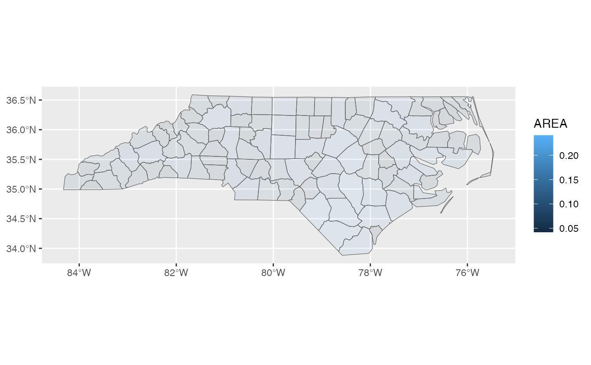

geom_sugarbag() provides a convenient way to create tesselated
hexagon maps using the sugarbag algorithm.
geom_sugarbag(
mapping = NULL,
data = NULL,
stat = "sugarbag",
position = "identity",
hex_size = 0.2,
na.rm = FALSE,
...
)Set of aesthetic mappings created by aes(). If specified and
inherit.aes = TRUE (the default), it is combined with the default mapping
at the top level of the plot. You must supply mapping if there is no plot
mapping.
The data to be displayed in this layer. There are three options:
If NULL, the default, the data is inherited from the plot
data as specified in the call to ggplot().
A data.frame, or other object, will override the plot
data. All objects will be fortified to produce a data frame. See
fortify() for which variables will be created.
A function will be called with a single argument,
the plot data. The return value must be a data.frame, and
will be used as the layer data. A function can be created
from a formula (e.g. ~ head(.x, 10)).
The statistical transformation to use on the data for this
layer, either as a ggproto Geom subclass or as a string naming the
stat stripped of the stat_ prefix (e.g. "count" rather than
"stat_count")
Position adjustment, either as a string naming the adjustment
(e.g. "jitter" to use position_jitter), or the result of a call to a
position adjustment function. Use the latter if you need to change the
settings of the adjustment.
Default is 0.2. Units are degrees, corresponding to
the diameter of the hexagons. See ?allocate.
If FALSE, the default, missing values are removed with
a warning. If TRUE, missing values are silently removed.
Other arguments passed on to layer(). These are
often aesthetics, used to set an aesthetic to a fixed value, like
colour = "red" or size = 3. They may also be parameters
to the paired geom/stat.
Create a sugarbag hex map
The sugarbag algorithm creates a hexagon tile map from spatial polygons. It represents each polygon with a hexagon, which is placed close to the polygon's centroid while also maintaining its spatial relationship to a focal point.
If geom_sugarbag() is used to make a map of Australia, the capital cities
will be used as focal points. For non-Australian maps, a single focal point
will be inferred from the data, as the centroid with the smallest total
distance to its three nearest neighbours. To specify focal points manually,
construct your hexagon grid manually -- see ?allocate.
allocate, ggplot2::geom_polygon
# \donttest{
library(ggplot2)
# Map of Tasmanian local govt areas using built-in data
tas_lga %>%
ggplot(aes(fill = lga_name_2016)) +
geom_sf(alpha = 0.1) +
geom_sugarbag(aes(geometry = geometry)) +
theme(legend.position = "none")
# Map of SIDS data from North Carolina
if (requireNamespace("sf", quietly = TRUE)) {
nc <- sf::st_read(system.file("shape/nc.shp", package = "sf"), quiet = TRUE)
ggplot(nc,
aes(fill = AREA)) +
geom_sf(alpha = 0.1) +
geom_sugarbag(aes(geometry = geometry))
}

# }